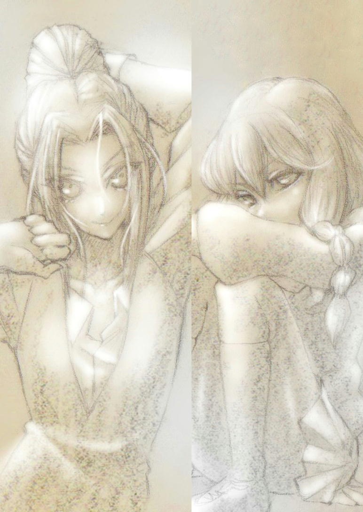
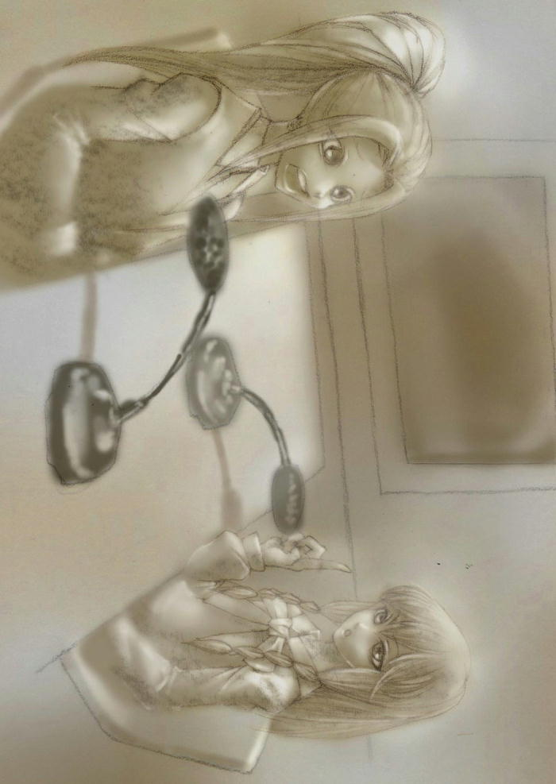
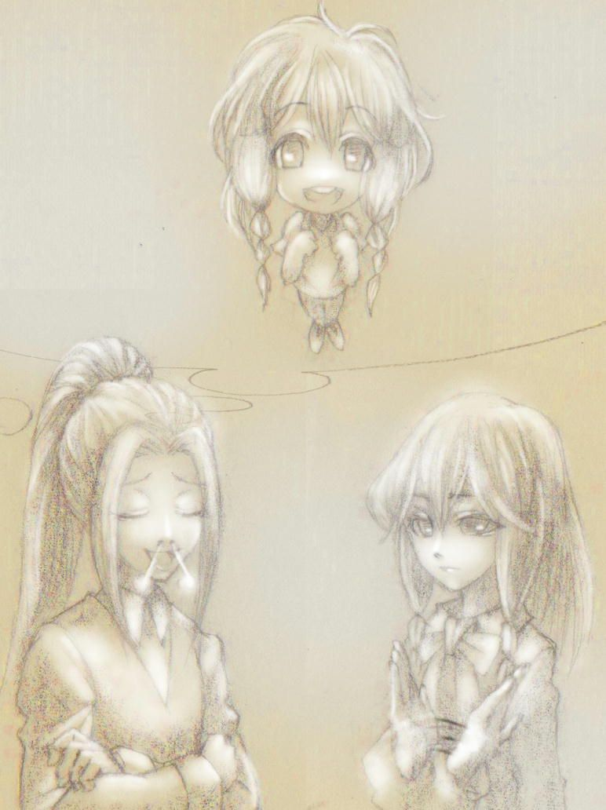
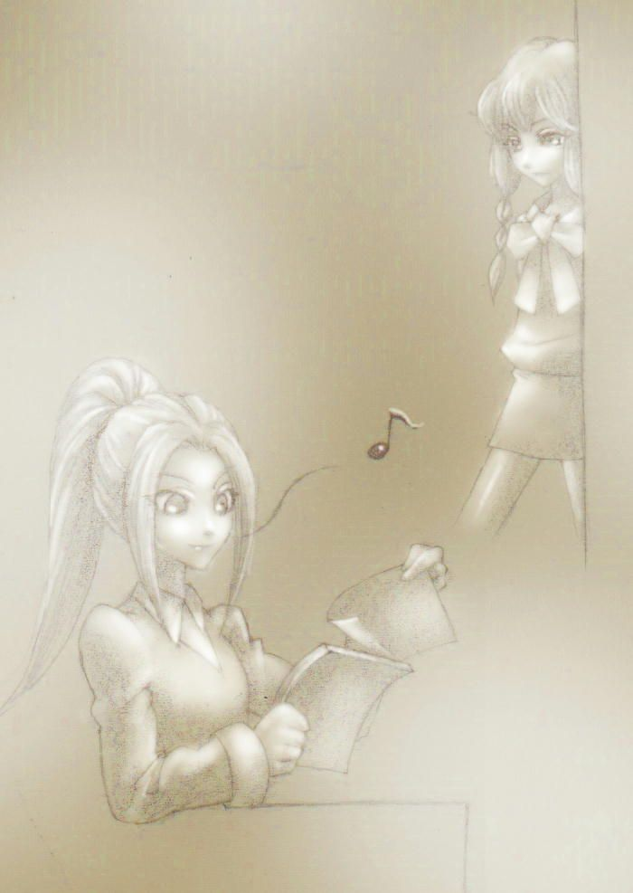
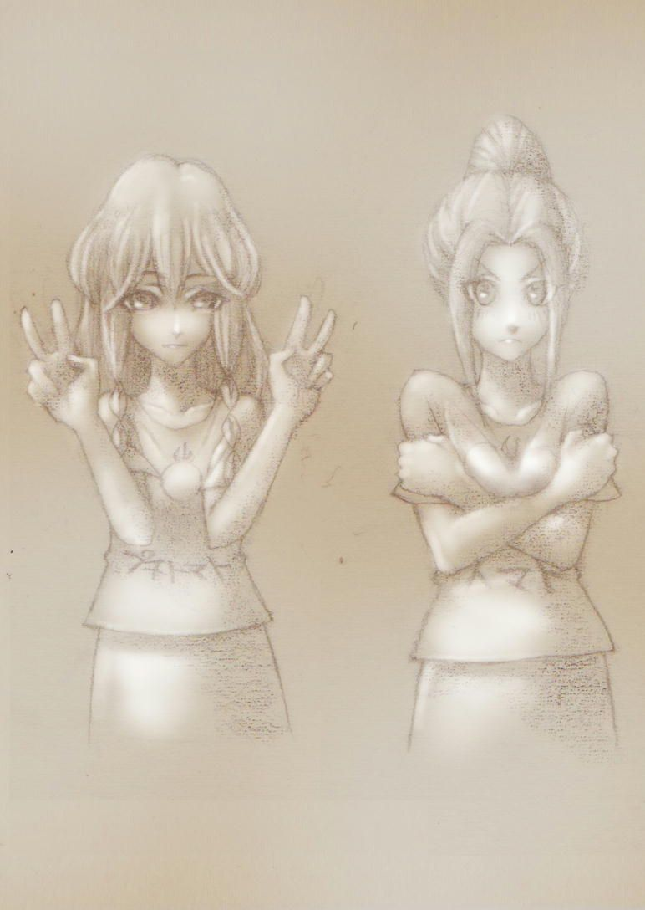
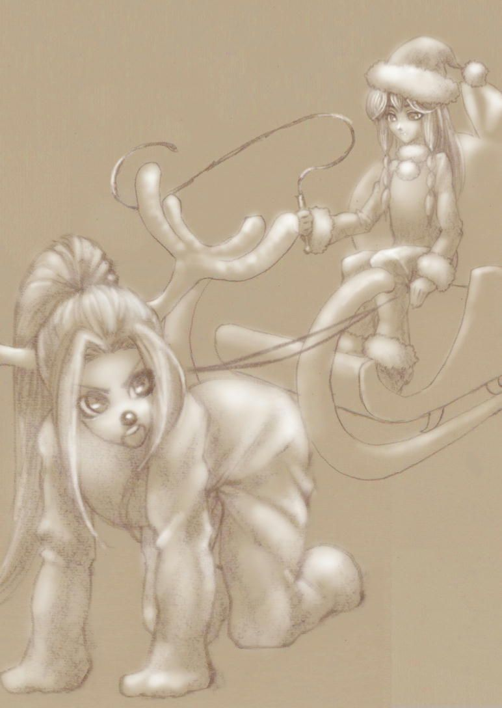
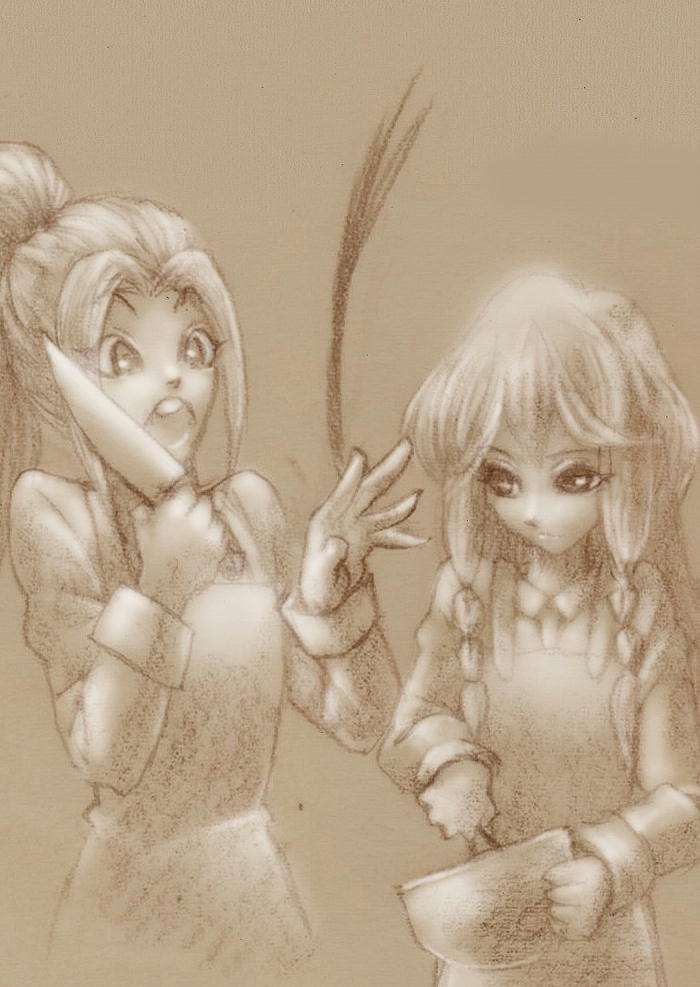
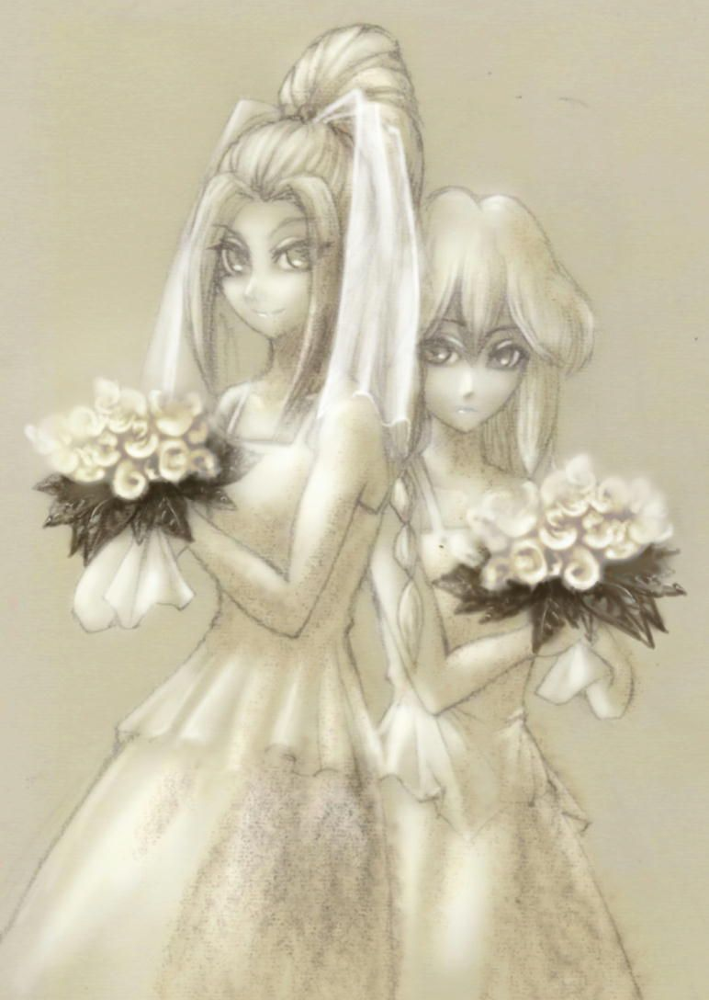

| わたしと！あなたの？声春ラジオ!? | |
| 十千しゃなお | |
| tousensyanao (2013) | |
私の名前は木下静。都内の大学に通う女子大生。部屋にはアニメのポスターやフィギュアが飾ってある、いわゆるオタクだ。だが腐女子ではない。女のオタクというと男は「あれだろ？ ＢＬが好きなんだろ？」とニヤニヤしながら聞いてくるがそんなことはない。女のオタク＝ＢＬ好きって明らかにおかしな偏見だろ。男のオタクがみんな百合好きなの？ 違うでしょ？ ちなみに私は百合が大好物だ！
って、そんなことはどうでもいい。私は今、夜の街を自転車で疾走していた。一昨日ばっさり髪を切ったせいで耳が冷える。もう四月とはいえ雪の降っていた二月からふた月しか経っていない。
何故疾走しているのかというと、バイトが長引いてしまったせいだった。普段なら二十二時に上がれるはずなのに今日は三十分も居残りさせられてしまった。全ては夜勤が遅刻してくるのが悪い。今日は二十三時から大事な用があるのに！
こんな急いでいるときに限って私はよくお巡りさんに絡まれ、防犯登録の確認という名の暇つぶしに付き合わされるのだけど、今日は何事もなく家まで辿り着くことが出来た。ピンクのマイ自転車を車庫にある自動車の脇に駐め、玄関を開ける。
「ただいまー！」
「おかえり、静。夜ご飯はー？」
帰宅を告げると居間の方からお母さんの声が聞こえた。
「食べてきたからいいやー」
返事をしてそのまま階段を上り、二階の自分の部屋へと向かう。食べてきたというのは嘘だった。でも、食べてないけどご飯はいらないなんて言ったら、うちのお母さんは私を心配して強引に食べさせようとするので、今だけは嘘を吐いたことを許して欲しい。ごめん、お母さん！ あとで勝手にカップ麺食べるよ。
勢いよく自分の部屋の扉を開けると、背負っていた鞄をベッドに投げ、パソコンとディスプレイの電源を入れる。スマートフォンで時刻を確認。まだ二十二時五十分だった。
よかった......間に合った......！
安堵しながら息を整えると、本棚の近くに貼ってあるポスターと目が合った。パンツスタイルのスーツを格好良く着こなし、長い髪を振り乱す、挑発的な目をした美しい女性。その人は私の憧れの人だった。名前を己己己己己己己 という。
己己己さんは現在三十歳にして芸能生活二十五年のキャリアを誇るベテラン声優だった。子役から声優に転身し、才能が開花。活発な少年役からおっとりとしたお姉さん役までこなす演技の幅の広さはもちろん。歌唱力も抜群で新曲を出せばドッカンドッカン売れていた。本人は歌は本業ではないと乗り気ではないが、ライブになればドーム会場が即満員になってしまうほどの人気がある。おまけに容姿も端麗。背も高くて格好いい。
そんなハイスペックな己己己さんの一番の魅力は歯に衣着せない言動だ。ファンが思っていることを代弁してくれる姿は爽快・痛快で、ファンからは姉御と呼ばれていた。トーク力も高い為、ラジオ番組には引っ張りだこ。ラジオのレギュラーを片手の指じゃ数えられないほど抱えている。
そんな声優界の一匹狼である姉御の新しいラジオ番組が今夜二十三時から始まる。そのことを知ったのは刑法の授業中だったが、思わず立ち上がり小躍りしてしまうほど嬉しかった。
パソコンが立ち上がるのを待つ間、スマホで番組表を確認する。番組表にはまだ番組名が書かれておらず、出演者の名前しか書いていなかった。姉御と......咏ノ原清恵 ？ 誰それ。
私もアニメオタクの端くれなので多少は声優にも詳しかった。だけど、咏ノ原という名前は耳にしたことがなかった。少なくとも私が見たことのあるアニメのスタッフロールでは一度もない。姉御と番組をやるということは、全くの無名ってことはないと思うんだけど......。
スマホで検索してみると一番最初に出てきたのは本人と思わしきブログだった。トップ画面にはどこか冷めた目をした女の子の制服姿が写っていた。三つ編みにした横髪が可愛らしい。えーとプロフィールは、と......この春に高校生になったばかりの新人声優か......。
は!? 高校一年生!? ちょっと待ってちょっと待って。確かに最近は現役女子高生の声優もいるけどさ、三月まで中学生だったってことでしょ!? 若！
ブログには今日から姉御とラジオが始まるという告知の記事しかまだなかった。ということは姉御との番組が初仕事ということだろうか。大丈夫かな。姉御、最近の若い子にありがちなアイドル的な売り方が大っ嫌いだからなぁ......。
なんて、これから始まる番組に不安を感じていると、いつの間にか放送一分前になっていた。私は慌ててヘッドホンをつけ、パソコンでラジオを聞く為のソフトのアイコンをクリックする。
どんな番組なんだろ......。

『はぁ......始まっちゃったかぁ』
『何でいきなり溜め息を吐いてるんです、己己己 さん？』
新しい番組は陰鬱な溜め息と淡々とした声で始まった。
『そりゃ溜め息も出るわ......どうしてあたしがこんな若い子とラジオをやんないといけないのさ』
『それは私と己己己さんが同じ事務所だからじゃないです？ ついでに言うとマネージャーも同じですし』
『......うん。まぁそうだよ、その通りだよ？ でもそういうの言っちゃダメでしょ、裏話的な』
『そうなんです？ でも社長が、今年は全面的に私を推していくから、何も包み隠すことなくその個性を発揮してくれって言ってましたよ？』
『......うん、だからそういうの。そういうのダメでしょ、言っちゃ。今あれなんだから。ちょっと何か言ったら、すぐステマだの枕だの言われるんだから』
『ステマではなくないです？ 全然ステルスしてないですし』
『そうだけど！ そうだけどダメだって！ これ絶対後であたしが社長に怒られるから！ ちょっとくらいステルスして、むしろ！』
『そうですか。わかりました』
『はぁ......頼むわよ、ほんと』
『どうしたんです？ 溜め息なんて』
『いや、そりゃ出るでしょ......これだからドル売りのキャピキャピした子は嫌いなんだよねぇ』
『ドル売りはそうだと思いますけど、私、キャピキャピしてます？』
咏ノ原 さんの声はあくまで淡々としていて他意はなく、不思議と純粋さを感じさせた。
『......あんまり』
『そうですよね』
『......はぁ。えー、それではタイトルコール行きますか。記念すべき一回目。聞いてる人、何て番組かわかってないだろうし』
『言う順番は己己己さん、次私、最後一緒にですよね？』
『そーそーそー。んじゃ、行くよ？』
『了解です』
『......わたしと！』
『あなたの？』
『声春 ラジオ!? 』『声春 ラジオ!? 』
二人が息を合わせてタイトルを告げると軽快な音楽が流れ始めた。声春ラジオ、か。青春とかけているのかな。
しかし。何だったんだ今のオープニングトークは......姉御押されてたなぁ。というか咏ノ原さん、歳のわりに落ち着いてるけど何かおかしいよこの子？
『えー、というわけで本日から始まりました［わたしと！ あなたの？ 声春ラジオ!? ］、パーソナリティの己己己己己己己 です』
『同じくパーソナリティの咏ノ原清恵 です。よろしくお願いします』
『咏ノ原さんはうちの新人なんだよね？』
『はい。そうです』
『今いくつなの？』
『十五歳です』
『若っ。どういう経緯でうちの事務所に入ったの？ 養成所から？』
『いえ。一応今は養成所に通ってますが、スカウトされたのは養成所に入る前です』
『スカウト？ あ、何、元々タレントさんとかモデルさんでスカウトされてて、声優に転向したってこと？』
『違います。芸能活動をするのは声優が初めてです』
『ほんと？ じゃ、ほんとにスカウトで入ったんだ......声優にスカウトされるってどんな状況？ 普通に街歩いてて声優になりませんかなんて声かけられないでしょ』
『新宿のカラオケです』
『カラオケ......？』
『はい。一人でカラオケをしてたんです』
『ヒトカラって奴？ アンタねぇ、友達とかいないの？ 若いんだからさぁ』
『若いと一人でカラオケしちゃダメなんです？』
『え？ うーん、ま、本人がいいんならいいか......で？ 一人でカラオケをしてたら？』
『今、ブースの外からこっちを見ているマネージャーの青木さんが突然私の部屋に入ってきたんです。ベロンベロンの状態で』
『はぁ？ 何それ、スカウトじゃなくてナンパじゃないの？』
『いえ、ナンパではなかったと思います。お酒臭かったですが』
『ふーん、なるほどね。あいつ、ナンパだったら社長にチクってやったのに......それで？』
『青木さんに言われたんです』
『何て？』
『可愛いねー、おじさんと一緒にカラオケしようよ、って言われました』
『結局ナンパじゃねぇか！』
『あとは流れで事務所に入ることになったんです』
『どんな流れだよ!? あれか!? 俺の女になれば声優にしてやるとか言ったのか青木!? 』
『いえ、そうではありません。私、処女ですし』
『はい、出た出た！ あんた、あれだよ？ 下ネタを言えば面白いと思ったら大間違いだよ？』
やれやれとわざとらしく姉御は呆れて見せた。確かにラジオで下ネタに走るのはよくある傾向だ。そして姉御が言うと説得力がある。
『別に思ってはいませんが、己己己さんこそラジオでよく下ネタを言ってませんか？』
『あたしはいいんだよ。そういうのが求められてるんだから！』
『......ズルいですね。というか処女は下ネタなんですか？ そもそもとして』
『え？』
咏ノ原さんの掲げた問いに、思わず姉御は素のリアクションを出してしまっていた。
『今の時代、処女厨なんて言葉があるように、男性が女性に処女性を求め、神聖視してたりするじゃないですか』
『まぁ、そうらしいな。どこのキリスト教徒だよって思うけど』
『それにこの業界、処女だとアピールする方が多いと思うんです』
『それはあれだろ？ そっちの方がオタ受けがいいからだろ。夢を見させてんのさ』
『夢とは言いますが、果たして私たち声優が処女であることに夢はあるのでしょうか？』
『何言ってんのあんた......？』
『考えてみてください。ファンの多くはあわよくば私たちと付き合いたいと思ってるわけです。告白したらまず断らないはずです』
『うーん......まぁ、そう、なのかな。全員が全員ではないと思うけど』
『だとしたら私たちが処女だと公言することはあわよくばの夢を壊すことになると思うんです。処女はお堅いイメージですから。むしろ誰とでも付き合うビッチだと公言した方がもしかしたら付き合えるかもと夢を見る人が増えるのではないかと』
『......わからなくもないけど、すごいこと言ってるな』
『大体、三十も過ぎて彼氏がいなかったりする方が夢がないと思うんです。行かず後家というわけではありませんが、ファンの方も夢どころか逆に心配してしまうんじゃないでしょうか』
『......だよね。三十過ぎて流石にそれはねー......』
それまで他人事のように呆れながら聞いていた姉御の声がかすかに震える。年齢ネタは後輩声優が軽々しく扱えないほど姉御の弱点だった。知ってか知らずか、咏ノ原さんは気づいている素振りを見せずに的確に傷口を広げる。
『結婚していることを隠しているとかならともかくですけど』
『......ねー......』
『ところで己己己さんはお付き合いされている方いるんです？』
『へぁ!? あ、あたし!? い、いるさ、いるに決まってるじゃん！ 一杯いる！ 五人くらい？ もう取っ替え引っ替えだよ！』
『ですよね。流石己己己さんです。夢があります』
『う、うん......』
姉御、見栄張ってるなぁ。免疫なさすぎてファンに心配されてるくらい男が苦手なのに。
『青木さんにスカウトされたときに己己己 さんの曲を歌ってたんです』
『青木がほんとにスカウトしてたかはともかく......どの曲？』
『［赤雪］です。己己己さんの曲はどれも好きですが、その中でも一番のお気に入りです』
『ほんとに？ あたしのことヨイショしようとしてるでしょ』
『そんなことはないです。私が声優になったのも己己己さんに憧れてるからですから』
『またまた～。だって、さっきからあんた全然あたしに憧れてるように見えないけど？ 仏頂面だし』
『それは緊張してるからだと思います。初めてのラジオですし、尊敬する己己己さんとの仕事ですから。小さい頃からずっと己己己さんのラジオ聞いてましたし』
『ふーん......案外可愛いとこあんじゃん。いいよ、お姉さんが業界で生き抜く術をタップリ教えてあげる』
『本当ですか？ よかったです。ガチガチだったので』
『表情が固いと思ったらそういうことだったのね。大丈夫、何でもお姉さんに任せな！』
『ありがとうございます。それでは緊張で噛んでしまうかもしれないので代わりに提供クレジットを全部読んでもらっていいです？』
『......おい』
『あと、喉が渇いたので何か飲み物買ってきてください』
『おい！』

『結局私が提供クレジット読みましたが、己己己 さんは嘘吐きなんですね。何でも任せてって仰ったのに......幻滅しました』
『ばーか。あたしをこき使おうなんて百年早いっての......あ、そだ、名前は何て呼べばいい？』
『お好きなようにどうぞ』
『何かあだ名とかってないの？』
『中学生のときはクラスにもう一人清恵さんがいたので、区別する為に原清 って呼ばれることもありました』
『ハラキヨ、か。スケキヨみたいなあだ名だね』
『スケキヨ？ 何です、それ？』
『知らない？ 水の中で逆立ちして足だけ出てる奴』
『聞いたことないですね』
『やっぱ若い子は知らないのか。うーん、いいや。あたしは普通に清恵 って名前で呼ぼうかな。清恵も私のことは名前で呼んでいいよ？』
『いえ、己己己己さんと呼ばせていただきます』
『え？ 何で？』
『大先輩を名前で呼ぶなんて恐れ多いこと私には出来ません』
『ついさっきまで己己己って呼んでたじゃん！？』
放送が始まってからというもの、姉御は自分に気怖じしない咏ノ原さんに振り回され続けていた。
『しかし、名前と言やぁあれだね。この番組のタイトル、どうなのよこれ？ 声春ラジオって』
『私は悪くないと思いますよ？ 声のお仕事ですし、今の季節は春ですし』
『なんだそりゃ？ じゃあ季節が変わったらタイトル変えるの？』
『それも面白いかもしれませんね』
『やめとけって。コロコロ変えると覚えてもらえないから』
『なるほど、それもそうですね。勉強になります』
『あと、後ろに春がつくと何かエロくてやだな』
『......？ どういうことですか？』
『ほら、● 春とか▲ 春とか言うじゃん』
『● 春？ ▲ 春？ 何ですかそれ？』
『おっと、清純ぶっちゃって～。周りにもしてる子いるんじゃないの～？』
『本当にわかりません。何なんですか？ ● 春て』
『え？ ほんとに知らないの？』
『はい。教えてください』
『いや、それはダメだって』
『どうしてです？ どういう意味なのか気になります』
『ダメだって。今は多分ピー音入ってるからリスナーにはわからないかもしれないけど、これ説明したら一発でバレるから』
『別にバレたっていいじゃないですか』
『だからダメだって。十五歳に変な言葉教えたらあたしが叩かれるから世間に』
『己己己さんが叩かれたって私には関係ありません』
『あんた、あたしに憧れてるって嘘だろ』
『嘘じゃないですよ。そんなことより何なんですか？ ● 春と▲ 春て』
『そんなことって、おい』
『教えてくださいお願いします』
が、返事はない。
『春って売ったり買ったり出来るものなんですか？』
やはり返事はない。
『あ、ひょっとして流そうとしてます？ ズルいですよ、黙りこくるなんて』
『ばーか。大人が何でも教えてくれると思うなよ？ 都合が悪くなったり面倒になったら流す、これ、賢い世渡りの仕方だから』
『大人は汚いんですね、わかりました。仕方ないのでまた名前の話に戻りますが、己己己さんて本名なんです？』
『一応ね。あんま好きじゃないけど』
『どうしてです？』
『だって己が三つで己己己だよ？ 完全に親も遊びでつけたよね』
『そうです？ 私は己己己さんの名前好きですけどね。可愛い響きで』
『可愛いかな？ まぁ、そうだとしてもあたしは可愛い系じゃないからキャラに合ってないよ。清恵は本名なの？』
『苗字は違います』
『あ、じゃあ清恵って名前は本名なんだ。若い子の名前にしては普通だよね。最近ほら、キラキラネームとか言うじゃん。清恵の周りにはいなかった？』
『そうですね、何人かいることにはいました』
『どんな奴がいた？』
『我瑠士亜 とか紗吸羽諏 とかいましたね』
『サキュバス!? 我瑠士亜 はともかく、紗吸羽諏 は酷いな』
『そうですね。サキュバスというよりフランケンシュタインみたいな顔をしていましたし』
『お前の言いぐさもなかなか酷いな......』
『陰口ではないですよ？ ちゃんと本人に言いましたから』
『余計ダメだろ......しかし、あれだな。あたし思うんだけど、キラキラネームって若い親だよね、つけるの』
『そう、ですね。そうかもしれません』
『ペット感覚っていうの？ そういうのはダメだね。名前なんて一生ものなんだからさ。芸名でつけるんならまだわかるけど』
『芸名でもサキュバスはセンスを感じませんけどね』
『清恵はお母さんが何歳のときに生まれたの？』
『私と同じ年齢ですね。母は十五歳のときに私を産んだそうです』
『十五!? はぁ!? 何それ早すぎだろ!? あれか、ヤンママって奴か！』
『ヤンキーではないですが。そうですね、早いとは思います』
『そっかー、すげーなぁ。十五のときの子ねぇ......あれ？ ちょっと待って』
『どうかしたんです？』
『ちょ待って、ちょ待って......十五のときに清恵を産んで......あんた今、十五歳だよね？』
『そうです』
『ってことは、今、三十歳ってこと？ ......嘘でしょ？ 清恵のお母さんとあたし、同い年ってこと？ 嘘でしょ？ ねぇ？ 嘘でしょ!? 』
驚愕した声色で問いただすも返事はない。
『あんたから見れば私はお母さんと同世代ってこと!? 嘘でしょ？ ねぇ、嘘だよね？ 嘘、嘘、ほんとに!? ねぇ？ 嘘でしょ？』
『......あ、そろそろＣＭ入るみたいですよ。番組では様々お便りをお待ちしております』
『ねぇ！ 嘘でしょ!? 』
哀しい叫びがかき消されるようにＣＭが入る。
姉御、最近は年齢ネタを気にしてるからショックだろうなぁ......。しかし、面倒になったら流すという姉御の教えをさっそく実践してる辺り、咏ノ原さんは大物だった。
『そういえば、あんたアニメの仕事とかもう決まってるの？』
『何本か収録してます。あと今度のオーディションで主役になる予定です』
『随分と自信があるな。あれか、出来レースって奴か』
『そうではないです』
『じゃあ何で主役になるって言い切れるんだよ？』
『私、自分で言うのも何ですが才能がありますから』
『ほんとに自分で言うのも何だな......あんたねぇ、ちょっとプライド高すぎだって』
『そうです？ 自分ではそうは思いませんが』
『取っつきにくすぎだね。新人なんだからもっとキャピキャピしてないと』
『......先ほどキャピキャピした子は苦手だって己己己 さん言ってませんでしたか？』
『ばか、あたしの好き嫌いとは別の問題だ。そんなつっけんどんな態度してると反感買われるぞ？ 同業者やスタッフだけじゃなくアニメ見てくれる人にも』
『でも、己己己さんだってキャピキャピはしてなくないですが？』
『あたしは何だかんだ長いからな、芸歴。それに最初の頃は一応頑張ってたぞ？』
『ファンの間では黒歴史として有名ですよね』
『うるせえよ。やっぱり、親しみがあった方がいいってことよ。多少媚びてるぐらいでちょうどいいんだよ』
『媚びる、ですか？』
『そう。試しにちょっとやってみなよ』
『試しに......？』
『そうそう。何ごとも試してみないと！ それこそ新人なんだし』
『......どのようにすればいいんです？』
『どのようにって......あ、わかった！ あんた、あれでしょ？ あたしに見本をやらせようと思ってるでしょ？ 誰がその手に乗るかっての』
『いえ。全く見たいとは思っていません』
『何でだよ!? むしろ見たいと思えよ！』
『......？ 見せたいのか見せたくないのかどっちなんですか？』
『見せたくねぇよ！ 見せたくねぇけど、ラジオ的にそっちの方が面白いだろ！』
『ああ、なるほど。勉強になります』
『ったく。というか、どのようにって私が見本を見せるまでの振りじゃなかったのかよ。じゃあ、何がどのようになんだよ？』
『急に媚びろと言われましても、どうすればいいかわからなくて。何か台詞とかお題はないんです？』
『台詞とかお題か......うーん、清恵 は男の兄弟っている？』
『男も女もいません。一人っ子です』
『そっか。ということは彼氏の隠語に弟とか兄は使えないな』
『隠語ですか？』
『そうそう。たまにいるんだわ、明らかに彼氏と遊んでるのに弟だって言い張る奴。それも結構な頻度で。ブラコンかって話だよ。ま、みんながみんな隠語として使ってるわけじゃなさそうだけどな』
『ブラザーコンプレックスの方が一般的に見れば不味そうですが......それでどうして私に兄弟がいるか尋ねたんです？』
『いや、何て言って媚びさせようかって思ってさ。兄弟がいないんなら、お兄ちゃんとか言ってみるってどうよ？ 呼び慣れてないだろうし』
『お兄ちゃんですか？ 確かに一度も使ったことはないですね。男の方はお兄ちゃんて呼ばれたいものなんです？』
『どうだろうねぇ。あたし的には絶対無しかな。シスコンってのがイマイチ理解出来ないし。先輩って呼ばれる方が好きだね』
『......それは私に先輩って呼んで欲しいってことです？』
『いや、いい！ あんたに呼ばれても敬意がないの丸わかりで嬉しくなくないから！』
『失礼なことを言いますね......じゃあ、お兄ちゃんて呼べばいいんです？』
『うーん、ただ呼ぶだけじゃ面白くないな......わかった。あたしをお兄ちゃんだと思って起こしに来て？ 今、朝っていうシチュエーションで』
『己己己さんを起こす......わかりました』
『媚び媚びね、媚び媚び』
『媚び媚びですね、了解しました』
暫しの沈黙の後、咏ノ原 さんの咳払いが聞こえてきた。
『お兄ちゃん、お兄ちゃん！ あれー？ おねむなの？ もう八時だよー？ 起きてー？ 学校遅刻しちゃうよー？』
それは先ほどまでの抑揚のない落ち着いた声ではなく、紛れもない舌っ足らずな幼女だった。
『......ありだな、妹』
『え？』
『ちょ、もう一回！ もう一回お兄ちゃんて呼んでみ？』
『......お兄ちゃん？』
戸惑いながらも咏ノ原さんが再び声を作る。
『ありだな！ お兄ちゃんありだわ！ 大っきくなったらお兄ちゃんと結婚するって言って？』
『何でですか......？』
困惑した様子で咏ノ原さんの声が素に戻る。
『いいから！』
『......わかりました。......あのねあのね、キヨね、大っきくなったら己己己お兄ちゃんと結婚するのー』
『あ～......するか』
『はい？』
『するか、結婚』
『頭大丈夫ですか？』

『清恵 さ、この番組どれくらい続けたい？』
『どれくらい......取りあえず季節のイベントは一通りこなしたいですね』
『何？ じゃ、一年で終わっちゃっていいってこと？ あんた夢がないねぇ』
『そんなことないです。ギャラが出る限りは続いて欲しいと思ってますよ？』
『ほんとにあんたは夢がないねぇ......』
『そう言う己己己 さんはどれくらい続けたいんですか？』
『あたし？ そうだなぁ......ラジオっていうのは急に終わることもあるからねぇ。あたしは正直、他にもレギュラー一杯あるから休みが欲しいくらいなんだけど......そうだなぁ、あんたが一人前になるまでかな？ このまま放っとくのは事務所の先輩として心配だし』
『己己己さん......それじゃ今日で終わりですね』
『おい!? 人の話聞いてた!? 』
『聞いてましたよ？ 話してる人の話を聞くのはマナーじゃないですか』
『聞いてたんなら何でそうなるんだよ!? 』
『だって私もう一人前ですし』
『あんたねぇ......そういうところが心配なんだよ。ブログとかすぐに炎上しそうなタイプって奴？ 若いんだから、適当な目標を作ってそれにむかって頑張ってりゃいいんだよ』
『目標、ですか......？』
『そ。何かないの？』
姉御の問いに返ってきたのは悩ましげな吐息。
『......思いつきません。己己己さんはあるんです？』
『あるよ。とりあえず今年の目標は早口言葉かな』
『早口言葉ですか？ どうしてまた』
『いやー、今度収録始まるアニメがさ、ちょっと早口言葉っぽい台詞がある役だから。あたし、実はあんま得意じゃないんだよね、早口言葉』
『どんな台詞があるんです？』
『えーと......こ・き・く・くる・くれ・こよ、とか』
『それって早口言葉ではなくカ行変格活用じゃないですか？』
『そう、それ。いわゆるカ変て奴。懐かしいなぁ』
『私はそこまで懐かしく感じませんけどね』
あったあった。私は古文大っ嫌いだったから余計覚えてる、トラウマ的な意味で。
『でも、何でカ変とサ変はあるのにア変はないんだろうね』
『それは単純にそういう活用をする動詞がないからじゃ？』
『いや、それはわかるんだけどさ。カ変とサ変があるんならア変だってあってもいいじゃん。ア・カ・サだし』
『......仮にあったとしたらどのように活用するんです？』
『んー......あ・い・い・あう・あう・あー、みたいな？』
『ケシの花でもやってるんですか？』
それはアヘン違いである。
『ところで台本を読んでて思ったんですが、この番組、コーナーって何もないんです？』
『リスナーから応募するんだとさ。どんだけ作家は楽したいんだか』
『己己己さんはどんなコーナーがしたいですか？』
『うーん......楽な奴がいいかな』
『己己己さんも人のこと言えないじゃないですか』
『だってさー、どうせ無茶なことやらされるんだよ？ あたし』
『確かに己己己さんのラジオは無茶なことをすることが多いですね』
『あたしのラジオってより声優のラジオあるあるだね。無茶なことやれば面白いんじゃないの？っていうワンパターンで安易な発想。これも作家が楽したいだけだね』
『......言われてみればそうかもしれません』
『声優なのにこんな無茶なことやってるとか、声優なのに面白いとか......評価されたとしても絶対に声優なのにって枕詞がつく。あたしは嫌いだね。それって普通声優は面白くない存在だって言ってるみたいじゃん』
『たまに芸人ばりに面白いと持て囃される方もいますね』
『あれもあたしは好きじゃない。どうせお笑い芸人さんのことを指してるんだろうけど、あたしらもれっきとした芸人だからね』
『そうですね。色んな声を出すのを生業にしているわけですし』
『だろー？ やっぱり自分の仕事にゃ誇りを持たなきゃダメだよ、声優だろうと何だろうと』
『プロ意識が高いですね、己己己さんは』
『ま、伊達に二十五年も芸能界にいないわな』
私は個人的に姉御の一番の魅力はプロ意識の高さだと思っている。口では仕事を休ませろと言っても、実際に穴を空けることはなく。ファンのことをラジオで口汚く罵ったとしても、握手会やサイン会を頻繁に開いては感謝の言葉を述べてくれる。そんな責任感があり、気配りの出来る姉御だから私は好きなんだ。そんなことを言ったら姉御は「は!? ファンなんかいらないし！ ファンレターとか、あたし、読まないで照明代わりに燃やしてるから！」って言いそうだけど。
『そういえば声優のラジオあるあるで思いついたものが一つあるんですが』
『お、何々？ 言ってみな』
『こんな滅茶苦茶な番組他にはない的なことをどの番組でも言う』
『......あるな』
『己己己さんもよく仰ってますよね』
『これはあれだ、アピールだよ、アピール』
『スポンサーへの頑張ってますアピールです？』
『違う違う。リスナーに向けてのアピール』
『リスナーさんに向けて？』
『そう。あいつらバカだからさ、すごいことやってますよーって言やぁ勝手に面白いと思ってくれんのよ』
『酷い言い草ですね。私たちの大事なお財布に対して』
『お前の言い草もよっぽどあれだぞ......大体、あたしは親しみを込めて言ってるから。あたしのラジオのリスナーはみんなそれくらいよくわかってるからいいんだよ』
『私も親しみを込めて言ってますよ？ リスナーさんに自覚があるかわかりませんが』
『ほんと、先が思いやられるわ......』
今日何度目かわからない溜め息を姉御は吐いた。
＊＊＊＊＊＊
その後も意識的な毒舌と無意識な毒舌の噛み合ってるのか噛み合ってないのかよくわからない会話が続き、一時間が過ぎようとしていた。
『お、そろそろ時間か』
『そうですね、もう十分録れたでしょうし』
『だからそういうの新人が言っちゃダメだっての！ まったく......清恵はどうだった？ 一回目の感想』
『......あっという間でしたね。己己己さんは？』
『あたしはあんたのせいでヒヤヒヤしっぱなしだったよ......多分、普段あたしとラジオ組む奴はこんな気持ちなんだろうなぁ。何となくわかった』
『よかったですね』
『よくはねぇよ!? ......あんた、このあと時間ある？』
『どうしてです？』
『一回目のあとだからね。スタッフとかみんなで決起集会でもしようかと。プラス、反省会も兼ねてね』
『なるほど。今日は月曜日ですので予定は何もないですね。ご一緒させていただきます』
『おいちょっと待て！ 何、サラッと収録曜日バラしてんの？ 放送すんの土曜だからね？』
『大丈夫です。土曜日と月曜日は二日しか違いませんから』
『何が大丈夫なの!? というかそれ土曜から月曜だろ？ 月曜から土曜だったら五日も違うじゃねぇか！』
『大丈夫ですよ、同じ週ですし』
『だから何が!? ねぇ、どういうことなの!? 』
『......己己己さん。さっさと終わらせましょうよ。私、十五歳なので、あまり遅い時間まではお付き合い出来ないんですから』
『何であたしが無理矢理引き延ばしてるみたいになってんの!? 』
『番組のホームページからメールの投稿が出来ますので、皆様の暖かいお言葉をお待ちしております』
『何勝手にシメに入ってんの!? ねぇ!? 』
『［わたしと！ あなたの？ 声春ラジオ!? ］、ここまでのお相手は......』
『おい！ 人の話聞いてる!? 』
無視され続ける姉御に、咏ノ原 さんはボソボソと小さな声で『ここ、己己己さんが名前言うところですよ』と促す。
『は？ だからさ』
『大丈夫です大丈夫です』
『だから何が大丈夫なんだよ!? ああもう......ここまでのお相手は己己己己 己己己と』
『咏ノ原清恵でした。来週も......』
『あなたに声をお届けします』『あなたに声をお届けします』
ああだこうだと文句を言いながら、結局最後にはキッチリ声を揃える辺り姉御はプロだった。
ヘッドホンを机の上に置いて一息吐く。気づけば日付が変わり日曜日になっていた。咏ノ原さんが言っていた通り、私にとってもあっという間の一時間だった。
初対面の姉御にあそこまで物怖じしない人は初めてだった。姉御の傍若無人なキャラに多くの若手が萎縮して振り回されてしまうというのに。今日振り回していたのは明らかに姉御ではなく咏ノ原さんだ。
私としては姉御のぶっちゃけトークが聞きたくてラジオを追っかけているのだけど......フォローに回る姉御もそれはそれで新鮮なのでありかもしれない。
何より。私は咏ノ原清恵という子が気になり始めていた。自らを高く評価していることを臆面もなく話すが、その話し方は自信家のような話し方ではなく、あたかも当然のことを何気なく話しているかのように思えた。危ういほどの素直さを彼女から感じていた。知らないことなら下ネタだろうと食いついて尋ねてしまうみたいだし。
今の高校生ってもっと捻くれた性格をしていると思ってたんだけど。咏ノ原さんはどこまでも真っ直ぐに思えた。それもあらぬ方向に一直線。
声春ラジオ、か。来週も聞いてみようかな。
そう思いながら私はさっきまで放送されていたラジオのホームページをクリックした。番組へのメールを投稿する為に。
私が声春ラジオを聞き始めてから約ひと月が経った。時の流れは早い。けれど変わり映えはしない。平日は大学に通い、やっと休日だと思ったらすぐにまた平日が来て。その繰り返しで五月になった。
私に変化は訪れなかったが、書店のあるコーナーには変化が起きていた。雑誌コーナーの更に一角。アニメ情報雑誌で彼女のことをよく目にするようになった。咏ノ原清恵 さんのことを。
現役女子高生というフレーズだけである程度は注目を浴びてしまうものだけれど、一番持て囃されているのは彼女のルックスについてだ。最近は声優さんもドンドン可愛くなっているが、彼女はどうケチをつけようとも業界最上位の顔面偏差値をしていた。咏ノ原さんのグラビアは笑顔一つなく、全てが同じ冷めたような無表情だったが、それがまた何を考えているかわからなくて魅力的だと多くの男性を虜にしていた。
ひと月で多くのファンを生み出すと同時に、咏ノ原さんは多くのアンチを生み出していた。原因の多くは間違いなく彼女の言動にあった。売り出し中の新人ということで多くラジオにゲスト出演していたが、その度に飾らない素直すぎる物言いで空気を凍らせる始末。そのせいで生意気な糞ガキだとかゆとりだとか毎日のように大手掲示板で叩かれていた。
『清恵、清恵』
『何です？』
『あんた、最近ネットで叩かれてるんだって？』
『そうなんですか？ 知りませんでした』
『ショック？』
ニヤニヤとした声色で姉御が尋ねる。が、咏ノ原さんはいつも通り抑揚のない声で答えた。
『いえ、全く』
『なぁんでだよ!? ちょっとは凹めよ！』
『そう言われましても』
『あんだよ、珍しく清恵の落ち込んでる姿が見れると思ったのにさー』
『こういうときって落ち込んだ方がいいんですね。わかりました』
『いや、わかるなよ。ほんとはこんなもん気にしない方がいいんだ』
『そういうものなんです？』
『ああ。好き勝手言わせときゃあいいんだよ、あたしらだって好き勝手にしゃべってんだし。だいたい、みんながみんな叩いてるわけじゃないしね。もしかしたら全部一人の仕業かもしんないし』
『なるほど。声優界一熱心なアンチがいると評判な己己己 さんが仰ると説得力があります』
『全然嬉しくないけどな、その評判』
姉御も咏ノ原さんに負けず劣らずアンチが多い。ルックスがよく、歯に衣着せないしゃべりをするという点では咏ノ原さんと同じだが、姉御が叩かれている理由は自分のことを面白いと勘違いしてそうだからだそうだ。私たちファンは姉御が面白い人だと思っているので、多分アンチとわかり合える日はこないだろう。
『さて、メール読むか。清恵、これ読んで』
『わかりました......またこの人ですか。先週も確か読みましたよね』
『あー、そうだっけ？ この子、色んな番組に送ってくれるからわかんなくなっちゃうんだよね』
『己己己さんの大ファンなんですね。わからなくなると言えば、意識してないとついつい同じ人のメールを選んでしまうことってありません？』
『あるね』
『あれはどうしてなんでしょうか？』
『うーん......あたしたちの好みがわかってくるからじゃないかな』
『私たちのですか？』
『そ。はがき職人て奴らはさ、あたしたちが好きそうな内容にドンドン寄せてくるのさ』
『言われてみるとそうかもしれません。でも、気をつけないと特定の人ばかり読むことになってしまいますね』
『そこ。大事なのはそこ。同じ人ばっか読まれたら、読まれなかった人は面白くないだろうしね。かといって有能なはがき職人が番組を面白くしてくれるのも事実。ようするにバランスが大事ってこったね』
『なるほど、流石は己己己さんです。それではメールを読ませていただきます......こちらは神奈川県のサイレンスシズカさんから。ありがとうございます』
『ありがとうございます』
お、私のメールが読まれてる。やったね。
『己己己さん、清恵さん、こんばんは』
『こんばんは』『はい、こんばんは』
『毎週楽しく拝聴させていただいております』
『ありがとねー、こんなしょうもない番組』
『先日、現在放送中のアニメ［魔法探偵ワッフル☆スコーン］を見ていたところ、スタッフロールに清恵さんの名前を見つけました。これが清恵さんのデビュー作かぁと思うと同時に、ある衝撃を受けました。何故なら、清恵さんの役は主人公のライバルであるグラマラスな女狐怪盗、音盗りのグレイスという非常に出番が多いキャラクターで、普段ラジオで聞いている声とは似ても似つかないセクシーな大人の声をしていたので名前を見るまで全く気がつきませんでした。実力に自信があるというのは本当だったんですね。可愛い後輩のデビュー作を己己己さんは見てらっしゃるんでしょうか？ と、いうメールです。ありがとうございます』
『......ふーん、もうデビュー作放送されてんだ？』
『そうですね。今、二......三話くらいです』
『ほー。何なの、魔法探偵って？ 魔法が使える探偵の話？』
『いえ、探偵は人間なので魔法は使えません。そうではなく魔女や魔物が魔法を使って犯した犯罪の謎をワッフルとスコーンの二人が解いていくという話です』
『え、何、ワッフルとスコーンなのに人間なの？』
『人間です。探偵なので偽名を使っているという設定ですね。男の子がワッフル君で女の子がスコーンちゃんです』
『何でワッフルとスコーンなの？ 偽名』
『ワッフル君がワッフルみたいな性格で、スコーンちゃんがスコーンみたいな性格だからだって聞いてます』
『どんな性格だよ......それで？ あんたの役はどんな役なの？』
『グレイスっていう女性の姿をした狐ですね。ワッフル君とスコーンちゃんの二人と敵対する犯罪組織に所属してるのですが、あるときは二人に手を貸したり、あるときは欺いたりと謎の多いキャラクターになっています』
『グラマラスな大人の女性なんだ？』
『そうですね。二人の前に現れてはスコーンちゃんを誘惑してます』
『あれ？ スコーンは女なんじゃないの？』
『グレイスは男女を問わず可愛いものが好きなんです。まぁ、グレイスが登場するとスコーンちゃんはいつも不機嫌になるんですけどね。ワッフル君の鼻の下が伸びるので』
『あ、スコーンはワッフルのことが好きなんだ？』
『それは......どうでしょうかね。最後まで見ていただければその辺りはわかると思います』
『なるほどねー......』
『あの、己己己さんは見ていますかという質問のメールなのですが』
『あー、そうだったそうだった。えー、まぁ、話の流れでわかると思うんだけど......』
そこまで言うと姉御は焦らすように間を取り『見てません！』と言い放った。
『何であたしが清恵の出てるアニメを見ないといけないのさー』
『見てないんですか？』
『あったり前じゃん！ だいたいあたし出てないし、そのアニメ』
『でも、さっき本番前に鼻歌で主題歌を歌ってましたよね？』
咏ノ原さんの言葉で姉御は言葉を失った。
『......歌ってた？』
『はい。歌ってました』
『...べ、別にあれだから！ 歌がいいなぁって思ってるだけでアニメは見てないから！』
『そうなんです？』
『そ、そうだよ！ あの子、いいよ。名前聞いたことないから新人さんなのかもしれないけど。歌うまいし、いい声してると思う』
『そうですか、ありがとうございます』
『は？』
唐突なお礼に姉御は疑問符を口にする。
『ありがとうってどういうこと？』
『声優とは別名義ですけど、私のデビュー曲なんです』
『え......』
『まさか声優の中で一番歌が上手いと目されている己己己さんに褒めていただけるとは光栄です』
『あ、あの』
『それも本編を見ていないのに好きになってもらえるだなんて。感無量ですね』
『......あ、あははははは』
誤魔化すように姉御は苦笑いを浮かべる。
珍しく嬉しそうにしみじみと話す咏ノ原さんは気づいてなさそうだけど、間違いなく姉御はアニメも見てるね。本当に姉御は素直じゃない。
『そういや世間はゴールデンウィークか』
『今年は日付の並びが良いらしく超大型連休なんて言われてますね』
『あたしら声優にゃ関係ないけどね。カレンダーなんてあってないようなもんよ』
『私の場合、普段は学校にも行かないといけないので、ゴールデンウィーク中に沢山録り溜めする予定です』
『休み全部埋まってるの？』
『そうですね、今のところ』
『若いんだから遊びたいだろうに。ご愁傷様。じゃあさ、休みがあったらどうする？』
『休みがあったら、ですか？ そうですね......ボイストレーニングに行くと思います』
『真面目か！ いや、確かに大事だよ？ ボイトレは。喉の調子とか全然違うし。でも、そういうんじゃないんだよねぇ』
『どういうことです？』
『もっとさ、千葉にある人気テーマパークに行きたいとか、そういうのないの？』
『千葉のテーマパークはあまり好きじゃないです。並ぶのが好きではないので』
『わかる。でも、待つ時間も待つ時間で楽しいよ？ 友達とくっちゃべったりしてさ』
『そうですか？ 私はアトラクションに乗る時間よりも並ぶ時間の方が長いなんて、損をした気分になってしまいます』
『じゃあ、温泉とかは？』
『いいですね、素敵だと思います。ですが、私はまだ高校生なので、一人で行くとなると両親を心配させてしまうのでダメですね』
『あー、そっか。あたしたちって休みにも仕事が急に入るから、友達とかと予定立てて行くのは難しいしね』
『ですね。まぁ、仕事がある内が華と言えますが』
他の声優さんの話で、休みが続くと不安になるとも聞いたことがあった。流行廃りの激しい業界なので、スケジュールが空きすぎると逆に精神が疲れてしまうそうだ。
『......あ、休みがあったら行きたい場所見つけました』
『お、どこどこ？ 言ってみ？』
『己己己さんの家に遊びに行きたいです』
『うち？ 何でさ？』
『己己己さんがどんなところに住んでいるのか興味があるので』
『なるほど、あたしと遊びたいんじゃなくて、あたしの家が気になるのね』
『はい、そうです』
『そう言われるとちょっとイラッとするな......別に普通のマンションだよ？』
『普通のマンションでも構いません。家具や空気など、己己己さんがどんな環境で生活してるかに興味があるので』
『何その野生動物の生態を観察するみたいな言い方......あんま人をうちに呼びたくないんだよねぇ』
『大丈夫です。私は粗相をするタイプではないですので』
『いや、まぁ、おかしなことを言うわりに行動がすごく礼儀正しいってのはあたしも知ってるけどさ』
『お互いの家に遊びに行くというのはどうです？ それならおあいこですし』
『あんたどこに住んでるだっけ？』
『神奈川県相模原市南区３の』
包み隠すことなく住所と思わしきものをスラスラと述べ始めると、姉御はワーワーと声を出して咏ノ原さんの言葉をかき消した。
『あんたばかなの!? 』
『大丈夫ですよ、編集してカットすればいいんですから』
『ばーか。ここのスタッフはアホばっかだから、そっちの方が面白いからってカット無しで流すからね？ ほんと』
『じゃあ炎上商法ってことでいいんじゃないですか？』
『だからそう言うの自分で言っちゃダメだって言ってんじゃん！ てか、清恵って実家でしょ？』
『はい。そうですが？』
『ヤだよー。おかしいでしょ？ 一回り歳が下の子の実家に遊びに行くとか。絶対あんたのお母さんに怪しい目で見られるわ』
『大丈夫です。母には己己己さんのことを色々話してますから』
『うわ、面倒くさいことになってる......あんたのお母さん、あたしのこと何て言ってんの？』
『そうですね......同世代ということで話が合いそうだと言ってました』
『あ......そっか。あんたのお母さん、あたしとタメだっけ？ 尚更顔合わせたくないわ』
『あと、己己己さんがよろしければ良い男性を紹介しましょうかと言ってました』
『悪いけど余計なお世話だから』
『まだ間に合いますとも言ってましたね』
『人を賞味期限間近みたいに言うのは止めろ!? 』
『というわけで、今度休みが出来たら我が家に遊びにいらっしゃってください』
『絶対行かないからな！』
咏ノ原さんのお母さんてどんな人なんだろうか。咏ノ原さんみたいに素直すぎるのかな？ すごいトゲトゲしい会話をしてそうな家庭である。

ある夏の日の声春ラジオは姉御の気怠げな声で始まった。
『......はい。今週も始まりました......声春ラジオ......己己己己己己己 です......』
『同じくパーソナリティの咏ノ原清恵 です。どうしたんです？ もう本番始まっていますが』
『......それはわかってるんだけどさ......ここに来るまででもう疲れちゃったよ......暑すぎだろ最近......』
『そうです？ 私は暑いの得意なので大丈夫です』
『確かに汗かいてるところって見たことないかも......でも、ちょっと意外』
『何がですか？』
『いや、だってさ、どっちかって言うと暑さに弱そうだと思ってたから。あんた、色白いしね』
『そんなに白いです？』
自分では自覚がないのか咏ノ原さんは尋ねるが、私のベッドの脇に置いてあるアニメ情報誌の表紙に写った彼女はライトを加味しても白かった。肌が白いと言っても青白いわけではなく、若々しい艶がある健康的な白さだった。
『白いね。あんたのお母さんも白かったけど』
『なら、遺伝ですね。私は日焼けしにくいのかもしれません』
『外に出てないだけじゃないの？』
『そんなことないです。どちらかというとアウトドア派ですから』
『そうなの？ インドア派だと思ってたわ』
『最近はよく己己己さんの家に遊びに行ってますしね』
『おいぃ!? ちょっと待てばか！』
『どうしたんです？』
『どうしてあたしの家に遊びにきてるとかラジオで言っちゃうわけ？ あんたとあたしが仲いいみたい思われるじゃん！』
『仲悪いんですか？』
『そうじゃないけど！ そうじゃないけど、あたしとあんたが色々交友があるってリスナーが知ったら、親子みたいで微笑ましいとか思われそうじゃん』
『私は気にしませんよ？』
『あたしが気にするの！』
姉妹と勘違いされるのはいいけど、親子はなぁ。姉御、未婚だし。
『だいたい、あたしの家に遊びに来てるからアウトドア派ってなんだよ？ あたしんちはキャンプ場か』
『マンションですよ？ ２ＬＤＫの』
『知ってるから！ 清恵よりよく知ってるから！ というかサラッと間取りをバラすなよ！ そうじゃなくて、あたしの家に遊びに来るのとアウトドア派の因果関係がわからないって話。どっちかって言うとインドア派じゃない？』
『私は自分の家の外に出てますよ？』
『でも、結局あたしの家にインドアしてんじゃん』
『じゃあ己己己さんの家に行くまでがアウトドアで、家に着いてからはインドアってことでいいんじゃないです？』
『いや、そんなこと言い出したら引きこもり以外は全員アウトドア派になっちゃうだろ......』
呆れたように姉御は言うけど、寝てる時間を考えれば結局インドア派になるんじゃないかと思ったり思わなかったり。
『己己己さんは海とプールどちらが好きですか？』
『あたしはプールだね』
『どうしてです？』
『だって海って泳ぐと髪とかめっちゃベタつくじゃん。清恵は？』
『私は海の方が好きですね』
『どうして？』
『風が気持ちいいじゃないですか』
『ああ、なるほどね。あたしも入らないんなら海は嫌いじゃないかな』
『己己己さんは水着似合いそうですよね』
『そうかね？』
『はい、無駄にスタイルがよろしいので』
『無駄とか言うなし。まぁ、確かに見せる相手はいないんだけどさ』
『雑誌で水着のグラビアをやられてはいかがです？』
『ヤだよ、恥ずかしい』
『需要はあると思いますが』
『いやいや、いい歳して流石にキツいでしょ。そう言う清恵だって水着の仕事はしてないじゃん』
『私は事務所からＮＧが出ていますので』
『あ、そうなんだ』
『そもそも私の身体なんて見て面白いでしょうか？ 私が男性でしたら己己己さんのように起伏に富んだ女性を見たいと思いますが』
自分で言うように咏ノ原さんの胸は豊満とは言えなかった。どちらかというと絶壁に近かった。まだ高校生だからとも言えるが、最近の発育が進んでいる高校生にしてはなさ過ぎる。
『ばーか。世の中には未成熟な身体の方がいいって輩もいるんだよ』
『それは私も聞いてはいますが......でも』
『ん？ 何か引っかかるものでもあるわけ？』
『胸が小さな女性を未成熟というのはいかがなものでしょうか？』
『ああ、欠陥品みたいな言い方が嫌ってことね』
『そうではありません。胸の大小ってトマトとプチトマトの関係だと思うんです』
『は？』
相も変わらず。咏ノ原さんは突拍子もないことを淡々と話す。
『普通のトマトとプチトマトを見比べて、プチトマトの方は小っちゃいから未成熟だ、なんて言いませんよね？ 普通』
『んー、まぁ言わないわな』
『トマトもプチトマトも未成熟なものは青くて固いです』
『......つまり大きさじゃなくて感触で判断しろってこと？』
『そうです』
『はー、なるほどねぇ』
共感したかのように声を漏らす。確かに若い子の方が張りがあって固いような気がするので、あながち間違っているわけではないと思う。
『でもさー、それってちょっと残酷じゃない？』
『どういう意味です？』
『だってさ、品種が違うって言ってるわけだろ？』
『はい』
『つまりプチトマトはトマトになれないって言ってるわけじゃん。それってこれから大きなトマトになれるかもって思ってるプチトマトを絶望の淵に叩き落とすことにならないか？』
『......？ 私はプチトマト好きですよ？ 小っちゃくて可愛いですし』
『いや、まぁ清恵はそうかもしれないけどさ』
『それに最近はフルーツみたいに甘いものもあるので。普通のトマトは皮がちょっと苦手です』
『何でほんとのトマトの話になってんの......？』
『何を言ってるんです？』
『あたしが聞きてぇよ』

『己己己 さん』
『何さ？』
『ここに置いてあったんですけど、今月のブック見ましたか？』
『いんや、まだ』
ブックとは声優やアニメの情報が載った老舗情報誌［声優ブック］のことだ。ブックというと競馬ブックの方が有名だが、声優ブックとは何の関係もないはず。
『色々ランキングにしているコーナーに己己己さんの名前出てましたよ』
『ランキング～？ あたしそういうの嫌いなんだよね。読者アンケートの奴でしょ？』
『そうですが。どうして嫌いなんです？』
『だって、あんなのただの人気投票じゃんほとんど。ランキングのお題関係なく』
『まぁ、マイナーな方はそもそも名前が出てきませんしね』
『そういうこと』
文句を言いながらも、マイクはパラパラと雑誌を捲る音を捉えていた。
『えーと......声優以外の仕事でも上手くいきそうな声優ランキングで女の三位か』
『バリバリのキャリアウーマンになりそう、スーツを着ていることが多いのでサラリーマンが似合いそう、とのことです』
『ははーん。わかるようなわからないような』
『サラリーマンが似合いそうなことと、声優以外の仕事でも上手くいきそうなこととの因果関係がわかりませんね。魔法使いのコスプレが似合うから魔法が扱えるって言ってるようなものです』
『そうか......？ でも、あたしは自分でサラリーマン向いてないと思うね』
『どうしてですか？』
『上司にペコペコすんの嫌いだし、後輩を指導するのも苦手だし。何より自分のせいで会社に迷惑とかかけるのイヤだしね。だからやるんなら自営業じゃないかな』
『なるほど、己己己さんらしいです』
姉御はスーツを着てるから、確かにサラリーマンが似合いそうだ。でも、目立ちたがりなところがあるから普通の会社は向かないんだろうなぁ。
『続いて、料理が上手そうな声優ランキングでワースト一位ですね』
『これはまぁ有名だからな』
『初めて己己己さんの家にお邪魔したときは立派なキッチンがあるのに調理器具が何もなかったのでビックリしました』
『だって無駄じゃん。家じゃ弁当温めるのにレンジを使うぐらいしかしないし』
『今では私のフライパンとか置いてありますけどね』
『何かイヤな言い方だな......歯ブラシ置いてある的な。あらぬ噂が流れそうだ』
『一緒に暮らしてはいませんが、己己己さんの家にお邪魔すると私がいつも料理を作っています』
『清恵 、異常に料理上手いよね。レパートリーも多いし。最近の女子高生はみんな料理するもんなの？』
『どうなんでしょうか。私は自主的に料理の勉強をしていますが』
『料理するの好きなんだ？』
『そういうわけではないですが、自分で美味しい料理が作れたら楽じゃないですか、わざわざお店に食べに行くより。己己己さんはどうして料理をしないんですか？』
『あたしはあんたと逆かな。自分で作るくらいだったら、お金出して作ってもらったもんを食べた方が楽だと思ってるからさ』
『でも、私は己己己さんからお金払ってもらってないですよ？』
『悪かったね......洗い物は手伝ってるんだから勘弁しとくれ』
『構いません。私も不味いものを食べるより自分で作った方がいいと思ってますから』
『ほんとに遠慮がないねあんたは』
ちなみに後日ブックを確認してみたところ、咏ノ原 さんは空気が読めなそうな声優ランキングで二位を圧倒的に突き放し一位に輝いていた。
『最近忙しそうですよね、声優の皆さん』
『まぁ、稼ぎ時だからな』
『そうなんです？』
『文化祭のシーズンだろ？ あちこちの大学からトークイベントのお誘いが届くってわけ』
『ああ、この間己己己さんがTwitterに大学の写真を載せてると思ったらそういうことだったんですね』
『清恵はどっかの大学行かないの？』
『私は自分の学校の文化祭があるので』
『そっか、あんた学生だもんね』
『仕事と被ってしまって、あまり準備には参加出来ていませんけど』
『勿体ないねぇ。ああいうのは本番より準備の方が楽しいのに』
『そういうものなんです？』
『ああ。私も学生のときはさ、友達と一緒に遅くまで学校に残ってダラダラと準備をしたもんだよ』
昔を懐かしむようにしみじみと語ると、姉御は何かに気づいたように『......あ』と言った。
『ねぇ、失礼なことだとは思うんだけどさ......あんたって友達いるの？』
『......？ 己己己さんは友達じゃないんです？』
『いやいや、そうじゃなくて。学校の友達』
『......どうなんでしょうか？』
『何だ？ 曖昧な返事だな。答えたくないってこと？』
『違います。そもそも友達の定義がわからないので』
『うわ、めんどくさ』
『挨拶を交わすくらいで友達だとするならほぼ全ての知人が友達ということになりますが、家に遊びに行ったことがあれば友達だと言うのなら同級生にはいないですね』
『うーん......じゃあ、二回以上一緒に遊びに行ったことがあれば友達』
『それでしたら十人くらいでしょうか』
『ほんとかよ？ ちょっと意外だな』
『皆さんにはよくしてもらっていますよ。仕事で学校を休んだときのノートを見せてもらったり』
『勉強か......そういやスタジオでもたまに見てるよね、教科書とか参考書とか』
『期末テストが近いので』
『あれ？ そうなの？ この間夏休みが終わったばっかなのに？』
『二学期制なので期末テストは夏休み明けに行うんです』
『大変だねぇ、夏休み明けにテストとか。休み中も気が抜けないじゃん。ところで清恵は勉強出来るんだっけ？』
『クラスでは一番成績がいいですね』
『へー、すごいじゃん』
『というより私の周りのレベルが低いんです』
『ノートを見せてもらってるのによくもまぁ......あんたはほんとに正直者だねぇ』
『クラスの方にもよくそう言って褒められます』
『褒めてるんじゃなくて多分皮肉だぞ、それ』
『皮肉......？』
心当たりがないかの如く、不思議そうに声を出す辺り咏ノ原さんは本当に素直だ。
『己己己さんは勉強出来た方なんです？』
『あ、ひょっとしてあたしのこと馬鹿だと思ってるだろ？』
『はい』
『この野郎......！ こう見えてもテストの出来はよかったんだぞ？』
『意外ですね、見直しました』
『まぁ、授業態度悪かったから成績は並だったけどな』
『予想通りですね、見直しました』
『それって元の評価に戻ったってことか......？』
『己己己さんは何の科目が得意だったんですか？』
『日本史とか文系科目かなぁ。逆に数学とかはサッパリだった』
『語呂合わせとか好きそうですもんね』
『好きだったねー。いい国 作ろう鎌倉幕府とかさ』
『......なるほど、やっぱり己己己さんはそれで教わっていたのですね』
『どういうこと？』
『最近の研究で違う説が有力になり、現在では別ので習ってるんです』
『え!? そうなの!? 』
『はい。よくあることみたいですよ』
『うわぁ......ショックだわ。今はいい国作ろう何幕府なの？ 小田原？』
『いえ、そっちの話ではないです』
『じゃあ横浜辺り？』
『......やれやれですね』
いい箱 作ろう鎌倉幕府だよ、姉御！
『もう今年も終わりかぁ......』
『まだ十日くらいありますけどね』
『ばーか。これ放送日クリスマスだぞ？ リスナーにとっては一週間切ってるわけだ』
『そう言われると確かに直ぐな気がします』
『毎年この時期は忙しくってバタバタしてるよ......キリストももうちょい考えて生まれてきて欲しかったね』
『十月くらいに生まれたという説もあるそうですよ？』
『十月～？ それもちょっとなぁ、文化祭のトークイベントとかで忙しいし』
『八月なんてどうです？』
『その辺は夏フェスがあるからなぁ......六月は？ ちょっとジメジメしてるけど』
『悪くないですね。六月は暦的にも大きなイベントないですし』
敬虔なキリスト教徒が聞いていたら憤死しそうなくらい罰当たりな会話である。
『己己己 さんは年越しの生番組があるので大変そうですよね』
『あれ？ あんたはどっかの年越し出ないの？』
『私も出たいとは思っていたのですが未成年ですので』
『ほー、もったいないねぇ。今年あんだけアニメ出たのに』
『ギャラが安いおかげですけどね』
声優だけの話ではないが、多くの若手のギャラは安い。だからこそ使われる。それを見てゴリ押しだと言う人もいるだろうが、事務所が力を入れている以外にも人気がある若手に仕事が集まる理由はあるのだ。
『まぁ、そう卑下するなって。正直な話、そこらの中堅より実力はあるんだから』
『別に卑下はしてません。自分に才能があることはよくわかっていますから』
『ただ、叫び声になるとまだまだだけどな』
『そうですか？』
『声を張り上げると素の清恵 が出てきちゃうんだよね、少し』
『私が現実の世界で声を張り上げているのを見たことがあるんです？』
『そういう話じゃなくてだなぁ......キャラの声じゃなくなっちゃうってこと。キャラソンとかはしっかりそのキャラで出来てると思うけどね』
『己己己さん......』
意外だったかのように咏ノ原 さんは姉御の名を口にする。
『何だよ、あたしだってちゃんとアドバイスしたり褒めたりはするぞ？』
『いえ、そうではなくてキャラソンまで聴いていただいているんだなと思いまして』
『へ？ いや!? あれだよ！ マネージャーがあんたにアドバイスしてくれって言ってきたからさ！』
『青木さんが？』
『そ、そう！ CD を渡されたんだよ！ あたしも先輩として断るわけにもいかないじゃん？』
『そうなんですか』
咏ノ原さんは納得するが、姉御の焦り方からいって真実は別にあるとみた。
『......もう一つアドバイスをいただいてもよろしいですか？』
『ん？ 別にいいけど......』
不思議そうに姉御は承諾するが、咏ノ原さんが自ら助言を乞うなんて声春ラジオでは聞いたことがなかった。
『最近、同じような役ばかり回ってくるようになってしまったんです』
『あー、ひょっとしてデコポンみたいなキャラってこと？』
『はい』
『なるほどねぇ......』
デコポンというのは夏に大流行した学園ものアニメで咏ノ原さんが演じた役のことだ。いわゆるツンデレな後輩キャラだが、ヒロインの為に身をひく健気さから一番の人気キャラへと化けていた。ちなみに本名は犬瀬美柑 というが、おでこを出した活発で可愛らしい髪型からファンにデコポンと呼ばれている。
『言いたいことはよくわかるけどねぇ......あたしも当たりのキャラをもらったときは似たようなキャラが増えたし』
『己己己さんもですか？』
『ああ。まぁ、嬉しくもあるけどね。こういう役ならこの人って感じであたしの声を求めてもらってるわけだし』
『それは......そうですが。もちろん、いただいたお仕事に文句は言いませんし、全力で臨んでいるつもりです......ですが、役者としてはやっぱり色んな役を演じたいと思ってしまいます』
『贅沢な奴だな、ほんと。実力はあるけど当たり役に巡り会えない声優なんてごまんといるのに......大丈夫だ。現場とかオーディションで演技に幅があることを見せつければいい』
『それで大丈夫なんです？』
『ああ、今のあたしがその証拠さ』
ある程度演じるキャラクターの傾向が固定されてしまう声優業界で、姉御は異質とも言えるくらい多種多様なキャラクターを演じている。スタッフロールで初めて姉御の存在に気づくことも少なくないのだが......、
『つまり己己己さんのようになるということですか？』
『ああ』
『便利屋さん扱いはちょっと......』
『おい！』
咏ノ原さんが言うように配役に困ったら姉御が使われる風潮もあった。
『クリスマスの話っていつまで信じてた？』
『クリスマス......？』
『あたしは結構早かったよ。いないって気づくの』
『え？ 何言ってるんです？ いるじゃないですか』
『は？ あ、ひょっとしてまだ信じてんの？ 高校生にもなって？』
『信じるも何も現実にいるじゃないですか。見たことないんです？』
『はぁ？ ......もしかしてあたしのこと担ごうとしてる？』
『どうして私が嘘を吐かなければならないんですか......』
『......確かに。清恵、嘘吐くの下手そうだもんね』
『そもそも嘘を吐く必要がないと思ってますから。一度も嘘を吐いたことはないです』
『ま、あんたぐらい素直な生き方をしてれば嘘も必要ないか......ってことは本気でいるって言ってんの？』
『はい』
『ほんとかよ、知らなかったわ......』
何やら話の雲行きが怪しい。咏ノ原さんはサンタクロースの存在を信じるフリをしてぶりっ子アピールするような人ではないし、常識を知らないわけでもない......いや、所々おかしいけど。断言する咏ノ原さんの声にはブレがなかった。
『ちなみにどの辺にいるの？』
『近くですと多摩の方にいるとか』
『え、日本にいるの？』
『はい。基本的には北極圏周辺にいるみたいですが』
『ああ、まぁ、それならイメージ通りだわ。やっぱり、あれなの？ 白いアゴ髭があるの？』
『そうですね。白くないのもいるそうですが』
『ん？ 白くないのもいるってことは一杯いるってこと？』
『そんなに一杯はいないと思います』
一言一言に驚く姉御と淡々とした咏ノ原さん。二人の間には明確に温度差があり、噛み合っていなかった。
『はー、まぁ、そうだよな。一杯いないとクリスマスの時期大変だもんね。普段は何やってるの？』
『普段です？』
『クリスマス以外のとき。仕事とかさ』
『詳しくはわかりませんが仕事は性別によって違うと思います』
『え!? 女の子もいるってこと？』
『いるに決まってます。どうやって子孫を残すと思ってるんですか』
『あー......そっか。流石にいつもクリスマスの赤い格好ではないんでしょ？』
『基本的に何も着てないと思いますよ？』
『裸族ってこと!? 警察に捕まっちゃうじゃん！』
『捕まるとしたら警察ではなくハンターではないですか？』
『ハンター!? プレゼントを強奪して売り飛ばそうとする奴がいるってこと？』
『......？ さっきから何言ってるんです？ トナカイの話じゃないんですか？』
あー、トナカイの話か。ビックリしたけどそうだよね、咏ノ原さんがサンタクロースを信じてるはずないもん。多摩にいるっていうのは多摩動物公園のことかな。しかしクリスマスの話題でサンタクロースより先にトナカイが浮かぶ辺り、咏ノ原さんはずれていた。
『あ、何だよ、トナカイの話かよ』
『はい』
『あたしはてっきりサンタの......って、トナカイってほんとにいるの!? 』
姉御!?

『こんなメールが来ております』
『何です？』
『己己己 さん、清恵 さんこんばんは』
『こんばんは』
『先日電車に乗っていたときのことです。満員電車に揺られながら通勤していると車内の中吊り広告が目につきました』
『中吊り広告......天井から吊されてるあれですね』
『ゴシップ誌の広告だったのですが、そこには超人気男性声優Ｋが現役女子高生の声優Ｕと深夜の密会と書かれていました』
『Ｋ？ 上尾野辺 さんですかね？』
『Ｋの方は直ぐにピンときたのですが、Ｕが誰なのか気になり、コンビニで立ち読みをしてみたところ、東京某所のホテル街と思わしき場所を男性が女性と腕を組んで歩いている写真が掲載されていました。男性の方は顔がはっきりと写っており、どう見ても上尾野辺さん。以前から女好きで有名ではありますが、お相手がお相手だっただけに、思わず「え!? 」と声を出して驚いてしまいました。顔はハッキリと写っていませんでしたが、左右の横髪を三つ編みにした髪型と華奢で小柄な体つきから察するに、咏ノ原 さんと思わしき人が上尾野辺さんに寄り添っているではありませんか。屈指の人気を誇る上尾野辺さんと破竹の勢いで活躍中の咏ノ原さんの熱愛、これは声優界を揺るがす大スキャンダルと言ってもよろしいのではないでしょうか？ ......こちら、もんじゅさんからのメールでした』
『ありがとうございます』
『......何か言いたいことある？』
『雑誌は立ち読みしないで買ってあげてください』
『そっちじゃねぇよ！ 正しいけれども』
こうして弾劾裁判が始まった。
『うちの番組の方でもね、この雑誌用意させてもらったんだけれども......見て、これ』
『......これは上尾野辺さんですね。この服を着てるところをスタジオで見たことがあります』
『そっちもそうなんだけど、これ、清恵じゃないの？ ちょっとぼやけてるけど。髪型とかそっくりじゃん』
『違います』
『お、妙にはっきり言うねぇ。逆に怪しい』
珍しく咏ノ原さんは不愉快さを隠さなかった。
『私こんなに不細工じゃないです』
『言うねぇ......でも、たまたま写りが悪かったのかもしれないじゃん』
『ありえません。それに私と上尾野辺さんが恋仲になることもありません』
『どうして？ 結構一緒に作品出てるよね？』
『だって、猿みたいな顔してるじゃないですか』
『ばか!? 別の事務所の人を悪く言うなよ』
『そう言われましても。私にだって選ぶ権利はあります』
『こわ......あんたねぇ、女のファンを敵に回したよ？ 完全に』
『何でですか？ 付き合っていないと言っているのに』
確かに付き合っていないことを公言することで上尾野辺さんのファンはホッとするだろうけど、それ以上に貶されたことで怒りを買いそうだ。咏ノ原さんは気づいてなさそうだけど。
『......はぁ。何か、これ以上追求したらまた余計な敵を作りそうだからやめとくか......』
『そもそも本当に写ってるのが私だったら事務所に止められてますからね、ラジオでこの話題出すの』
『まぁ、その通りなんだけどさ......というわけで、上尾野辺くんはともかく清恵は潔白です』
『その日はこの番組のイベントで福岡にいました』
『ラーメン美味しかったよね』
『焼き鳥屋であんなに豚バラ肉を食べると思いませんでした』
『あー、旨かったなあれ。とり皮も旨かったけど』
『私は椎茸がよかったです』
こうして咏ノ原さんの弾劾裁判は何故か上尾野辺さんが猿みたいだと馬鹿にされるだけで終わり、福岡のグルメトークへと移っていった。番組後に咏ノ原さんのTwitterが腐女子に襲われたが、それはまた別の話。
『清恵、次あんたがメール読んで』
『わかりました......えーと、アカテナンゴさんから』
『はい、ありがとー』
『己己己さん、清恵さん、こんばんは』
『こんばんはー』
『二月に入り、そろそろ全国の男子が楽しみにしているイベント、バレンタインが近づいてまいりましたが、お二人にチョコを渡す予定はあるのでしょうか？ ないのでしたら己己己さんと清恵さんでチョコを交換したらいかがでしょうか？ とのことです』
『ふーん......バレンタインねぇ』
『全国の男の子はバレンタインが楽しみなんです？』
『そりゃあ楽しみなんじゃない？ 好きな子からチョコがもらえるかもしれないわけだし』
『ですが、もらえない可能性もありますよ？ それに自分の好きな子が他の男の子にチョコレートを渡す可能性もありますし』
『あんたね、夢がないよ。リスクを考えちゃあいけないね』
『チョコレート一つに夢もないと思いますが......』
『違うんだよなぁ......わかってない。あんた、チョコあげたことないでしょ？』
『ありますよ』
『あるの？ ちょっとというか、かなり意外だわ』
『私、料理上手じゃないですか？』
『ああ、自分で言っちゃえるくらいにな』
『そのせいなのかバレンタインが近くなると色んな男子にチョコレートが欲しいとお願いされてしまって。おかげでバレンタイン前日はチョコレートを作るのに大忙しでした』
『え？ それって......料理が上手だからじゃないんじゃないの？』
『......？ まぁホワイトデイのお返しでお菓子が沢山もらえたので私としてもありがたかったですが』
『あんたお菓子好きだもんねぇ』
『ゴディバのビスキュイが大好きです』
『随分詳しく言うねぇ』
『もしかしたらリスナーさんが送ってきてくれるかもしれないじゃないですか』
『卑しいな』
『抜け目がないと言ってください。そう言う己己己さんはチョコレートを渡したことはあるんです？』
『ないね！』
『でしょうね』
『......何だよー、もっと話広げさせろよー』
『だって己己己さん料理しないじゃないですか』
『そ、そうだけどさ、市販のチョコをそのまま渡したかもしれないじゃん』
『でも、渡したことないんですよね？』
『うん』
『......友達とかと交換しなかったんですか？』
『あれだね、ホワイトデイに返してた。そっちの方がわかりやすかったから』
『完全に男子のやり口ですね』
『いいんだよ、誠意がありゃ』
二人ともちょっと変わったバレンタインを過ごしていたらしい。姉御は姉御肌だから女子に人気ありそうだし、咏ノ原さんは男子に告白されても告白だと気づかなそうだ。ああ無情。
『今年は誰かに渡す予定あるんです？』
『ないね！』
『でしょうね』
『清恵は？』
『大量生産の予定です。学校や収録現場に持って行くので』
『狡賢いねぇ。業界での好感度を上げるってわけだ』
『たかがチョコレートで仕事が増えるのなら当然の選択です。それで、どうするんですか？』
『何を？』
『私たちでチョコレート交換しますかって話です』
『市販のでもいいんなら』
『せっかくだから作りましょうよ』
『ヤだよ。大体、清恵は沢山作んないといけないんでしょ？ ただでさえ。あたしの分で手間取らせるわけにはいかないね』
『大丈夫です。百個と百一個では誤差のようなものです』
『百個も作んのあんた!? で、でもさ、あたし料理下手だからイヤなんだよねー』
『大丈夫です。心を込めて作ればきっと美味しくなると思いますよ。だって、己己己さんが作るんですから』
『清恵......』
暖かい言葉に姉御は咏ノ原さんの名をつぶやく。
『......それは番組的に美味しいって意味だろ？』
『はい』
『絶対やらない！』
『さて、今日は何の日ですか？ 己己己 さん』
『......第一回箱根駅伝が開催された日』
『あ、そうなんです？ 知りませんでした』
『何で駅伝て言うんだろうね？ 駅ごとにたすきを渡すから？』
『そうですね。駅、と言っても電車が止まる駅とは別のものですが。昔は大きな都市と都市を結ぶ道に宿泊所があってそこを駅と呼んでいたそうです。どちらかというと道の駅のようなイメージですね』
『はー、なるほどねー』
『それで、今日は何の日ですか？』
『だから、第一回箱根駅伝が開催された日』
『ではなく』
『ではなく!? 一応あってるよ!? 』
『あってたとしても正解は別の答えです』
『別の......？』
『はい』
『......煮干しの日』
『そうなんですか？』
『ああ。２、１、４で煮干しの日』
『２と４でニとシはわかりますが、どうして１でボなんです？』
『棒ってことよ』
『あー、なるほどです。己己己さんは煮干し好きでしたよね』
『そう言われると猫みたいでヤだな。ラーメンの話な』
『私は鶏ガラの方が好きです』
『鶏ガラみたいな身体してるから？』
『どちらかというと麺棒じゃないですか？』
『あ、うん、ごめん......』
『......？ 何で謝るんですか』
バレンタインの話題へと誘導する咏ノ原 さんへの姉御の反撃は攻撃とすら認知されずに終わった。
『それで？ 何の日ですか今日は？』
『ウイニングカラーズの誕生日』
『誰ですかそれは』
『アメリカの競走馬』
『......あまりふざけたことを仰るならぶっ飛ばしますよ？』
『こえーよ。あたし、一応先輩なんだけどなぁ......』
『時間の無駄です』
『人のしゃべりを無駄って言うなよ！ ラジオなんだから』
『まぁ、カットすればいい話ですけどね』
『そんなにあたしつまんない話してる!? 』
『今後の態度によります。ラストチャンスですよ？ 今日は何の日ですか？』
最後通告に渋々姉御が『......バレンタイン』と答えると、咏ノ原さんは『よく出来ました』とどっちが先輩かわからない言葉で褒めた。
『どっちから渡しますか？』
『何を？』
『はぁ......潰しますよ？』
『何を!? 』
『喉をです。そうすれば静かになりますよね』
『エグ過ぎんだろ......』
『声優生命を絶たれたくなかったら、これ以上とぼけた真似はしないでください。まだタイトルコールもしてないんですから』
『あ、じゃあタイトル行っちゃう？ ......ごめん、嘘嘘嘘！ 頼むから手を貫手にしないで！ 何、突くの？ 貫手で喉を突いちゃうの!? 地獄突き!? 』
『狙いが外れたら目に刺さるかもしれませんね。どちらがいいか選んでください』
『チョコを渡すか突きを喰らうか......？』
『声が出せなくなって声優を辞めるか台本が見えなくなって声優を辞めるかです』
『突かれるの前提かよ!? わかった！ もうしない、もうしないから！』
『......絶対ですよ』
今日の咏ノ原さんはいつにもまして強い。いつも強いけど。咏ノ原さんなら躊躇なく突きを放ちそうなだけに、脅しとしての効果は絶大だ。
『いつまでも己己己さんのペースに付き合うわけにもいかないので、私から渡してしまいますね』
ガサゴソとチョコを何処かから取り出す音が聞こえ、放送作家と思わしき人の『渡すときに何か一言』という声が入った。
『わかりました』
『何か一言って恥ずいな』
『己己己さん。はい、チョコレートです』
『お、随分豪華な包み紙。さんきゅ』
『そして何か一言......』
『何でもいいよ。当たり障りのない奴。そっちの方が後で渡すあたしも楽だから』
『えーと......喉は大事にしてくださいね』
『さっきまであたしの喉を狙ってた人間の言葉か!? あんたが言うと夜道には気をつけな的な感じで恐いわ......』
『夜道は気をつけるべきじゃないんです？ 暗いですよ？』
『ああ、うん。そうだわ、その通りだわ』
『......？』
姉御の言葉が理解出来ていない辺り、喉を大事にという言葉は本心からのものなのかもしれない。
『開けていい？』
『どうぞ』
『んじゃ、さっそく』
リボンを解くシュルシュルという音と包装用紙の擦れる音がマイクに入ると、次の瞬間、姉御は女の子らしい『キャー！』という嬉しそうな歓声を上げた。
『何これ！ チョコタルトじゃん！』
『はい。ガナッシュが好きだと聞いていたので』
『え、スタッフに配る余りでもよかったのに』
『せっかくですから。好きなものを食べて欲しいじゃないですか』
『嬉しいこと言ってくれんじゃん。食べていい？』
『どうぞ、召し上がってください』
『んじゃ、お言葉に甘えてっと』
サクッと気持ちのよい音がした。それはおそらく姉御がタルトを口に運んだ音だった。
『ウマっ！ 予想はしてたけど、あんたお菓子作りも上手すぎ！』
『喜んでいただけたのなら何よりです』
『これどこから作ってんの？ カカオから？』
『流石にカカオは育てていませんよ？ 育てる土地がないですし』
『いや、そうじゃなくて。焙煎からやってんのかなって。あんた凝り性だし』
『凝り性ではないです。自分でやった方がいいものを自分でやっているだけのことなので。今回は市販のチョコレートを溶かして作りました。焙煎する道具も時間もなかったので』
『へー、じゃあ私と同じだ』
『そうなんです？』
『うん。まぁ、私は市販のチョコを溶かして型に入れただけだけどね』
『いいんじゃないですか？ 失敗しようがないですし』
『それって褒めてるつもり......？』
『馬鹿にしてはいないですね』
『......ほんと、いい性格してるよあんた』
『ありがとうございます。次は己己己さんの番です』
『はいよ。何か緊張するなぁ......』
『そうですか？』
『だって初めてだよ？ あたし』
『本当に初めてだったんです？ この仕事をしていればイベントや企画で渡すこともあると思うんですが』
『それがねぇ、上手い具合に逃げてきたんだよねぇ。あたし、恐いイメージあるから断るの容易だし』
『意外と押しに弱いですけどね。先週あれだけやらないって言っていたのに』
『しょうがないじゃん！ あんたが作ってくるってんだから。あたしもやらないと失礼だし』
『義理堅いんですね』
『何とでも言ってくれ。ほい、あげる』
ぶっきらぼうに姉御がチョコを渡すと咏ノ原さんは『ありがとうございます』と淡々とお礼を告げた。
『梱包からしてハート型なんですね』
『べ、別に深い意味はないからね！ たまたま友達にもらった型がハート型だっただけで！』
恥ずかしそうに姉御は弁解するが既に咏ノ原さんの興味はハートになかった。
『そうですか。ところで、その手はどうしたんです？ 左手。絆創膏だらけですが。乾燥肌です？』
『いや、これはその、チョコを作るときに切っちゃって。ほら、あたし料理なんてほとんどまったくしないからさ。あ、ごめん。あんたの包丁借りた』
『それは構いませんが......でしたらフードプロセッサーを使った方がよかったのでは？』
『あー、そっか。そこまで頭回らなかったわ』
『ところで何か一言はないんです？』
『あ、えー......えー？ 何か一言......』
えー、えー、と悩むばかりでなかなか姉御から一言は出てこなかった。色々あるじゃん！ この間の最優秀新人賞受賞おめでとうとか！
『えー......えー......あれだ、新人賞おめでとさん』
そう、それ！
『ありがとうございます。今年は私以外に碌な新人がいなかったので当然と言えば当然ですが』
『あんたいつか後ろから刺されそうだな』
『指をですか？』
『だったらまだマシだろうねぇ......』
何でこの人たちはバレンタインなのに目を潰したり刺されたりする話をしているんだろうか。女の子二人の番組なのにまったく甘い香りのしないバレンタイン回だった。

四月に入り初めての放送は姉御一人で始まった。
『えー、今週も始まりましたけれども......今日は清恵 がまだ来てません。遅刻かな？ 珍しい。というか大事な話があるからいつもより早く来てって清恵に言われたんだけどなぁ......』
どうしたんだろうかと思いながらも姉御が収録を進めようとすると、ブースのドアが慌ただしく開く音がした。
『すみません。遅れてしまいました』
『遅ぇよ。どうした？ 遅延？ それとも寝坊？』
『いえ、そういうわけではないんですが、心の準備が出来なかったというか』
『心の準備？ あ、なに、そんなに重大な発表なの？ あたしはなんかの宣伝だと思ってたんだけど』
『重大......そうです、ね』
『あんだよ、もったいぶらずに言っちゃえよ？』
声だけでしかわからないけど、今日の咏ノ原 さんはどこかおずおずとしていた。いつもの何を考えているのかわからないような平穏はなかった。
『......よろしいです？』
『よろしいよ？』
『わかりました......えー、それでは。非常に私事なので恐縮ではございますが』
『随分と仰々しいな。どうせ番宣だろー？』
『......私、咏ノ原清恵の結婚が決まったことを皆様にお伝えいたします』
『......え？ 今何て言った？』
冷やかすように茶化しながら聞いていた姉御のトーンが一瞬で真剣なものに変わる。
『結婚することになりました』
『はぁ？ え、だって、あんた、あれじゃん。まだ高校生じゃん』
『もう十六歳なので法律的には問題ありません』
『いや、ちょ、そうだけどさ......相手は誰？ 同業者？』
『......それはちょっと』
『誰？ 誰ダレだれ？ 杉沢事務所の上尾野辺 くん？ 北見プロの伊藤か？』
『ダメですよ、己己己さん。他の事務所の方の名前を出しては。己己己 さんがそう教えてくれたじゃないですか』
『誰？ そいつ誰？ 絶対にそいつ潰すから。ほんとに。十六歳に手を出すとか許されないでしょ』
『一般の方なので許してあげてください』
『......ほー、一般のロリコンね。それで、どんな人なの？』
ラジオのパーソナリティとして話を膨らませようとするが、姉御は明らかに苛立っていた。
『どんな人......えっと、向こうの人なので背はすごく高いですね』
『向こうの人？』
『アメリカ人の方なんです』
『アメリカ!? なんだそりゃ!? あれか、鬼畜米英か！ ギブミーチョコレートって奴か！』
『何を言ってるんですか......？』
『メリケンどもめぇ......まぁ、いいけどさ。清恵が決めたことだしね。おめでとさん』
『ありがとうございます』
『清恵が結婚ねぇ......清恵のお母さんも早かったっていうのは知ってたけど、まさかだったね』
『そうですね。自分でも少し驚いているというか......』
『ちょっと早すぎるとは思うけど。ま、これからは旦那の為にも仕事頑張んないとね』
『いえ、そのことなんですが......』
『ん？ 何かあんの？』
『あの、実は......』
『あー、わかった。あれでしょ？ 新婚だから仕事減らすんでしょ？ なるほどねぇ。ま、今あんた出過ぎなくらいだからちょうどいいんじゃない？』
『いえ、そうではなくて、その......』
『んー？ どうしたさっきから？ 歯切れが悪いけど。清恵らしくないよ？』
姉御の言う通り。咏ノ原さんが言い淀むなんて、私には初めてだった。雑誌の企画である、空気が読めないランキングで一位に輝いたほどの自然体には思えず、いつもよりずっと考えて言葉を選んでいるように思えた。
『試しに言ってみ？』
『......実は』
『実は？』
『......アメリカで彼と一緒に暮らすんです』
『へー、何だそんなことか......って、はぁ!? 』
どうせ大したことではないとタカをくくっていた姉御が驚愕する。
『アメリカで暮らすって......あんた、仕事はどうすんのさ？』
『......四月一杯で辞める予定です』
『はぁ!? 意味わかんない！ だって、清恵言ってたじゃん！ ギャラが出る限りはこの番組続けるって！』
『......そうですね。奇しくも己己己さんが言っていた通り一年で終わることになってしまいましたが』
『何でよ!? 声優になったばっかじゃん！ 結婚したからって仕事まで辞める必要ないよ！』
『色んな方に相談した結果、こうした方がいいと思ったんです』
『あたしには何で相談しないのさ!? 』
『己己己さんが知ったら怒るかなと思ったので』
『怒るよ!? 怒るに決まってんじゃん！ 何でもっと早く言ってくんないの!? 』
『......すみません。なかなか言い出す機会がなくて』
『言い出す機会なら一杯あったよ！ 一昨日だって一緒に映画見に行ったし、先週だって先々週だってあたしらは毎日のように顔を合わせてたじゃん！』
収録中であることを忘れているのかと思うくらい姉御の語気は荒かった。だけど怒っているような感じではなく、拗ねているような悲しんでいるようなやるせなさが言葉からは感じられた。
『......大丈夫ですよ。この番組自体は続くそうなので、すぐに代わりのパーソナリティは見つかるはずですし』
『......やだ』
『え？』
『清恵が辞めるんだったら私もこのラジオ辞める！』
『ダメですよ、そんな子供みたいなことを言っては』
『だって！ あんた以外の人とこの番組やりたくないもん！』
駄々っ子のように言い放つ。姉御は普段から面倒なことを振られると、やりたくないと言いながらやることはしっかりやるので、ファンの間ではファッション拒絶と言われているのだが。今日の拒絶は心からの声だった。
『己己己さん......』
目の前の先輩を想うように名前をつぶやく。すると、咏ノ原さんは聞き取るのも難しいくらい小さなボリュームでクスっと笑った。
『己己己さん。今日は何月何日ですか？』
『何月、何日......？ この話と何が関係あるの......？』
『まぁまぁ。何月何日です？』
『三月の二十六......』
『そっちじゃなくて放送日の方です』
『放送日......？ 四月の一日......』
『四月一日ですね。つまり？』
『つま、り......？』
しょぼくれたような声を出す姉御は、意気消沈してしまっているせいか頭の回転が明らかに鈍かった。そんな姉御を咏ノ原さんが誘導する。
『つまり、エイ......』
『エイ......？』
『エイプリル......』
『エイプリル......？』
『エイプリル・フー......』
『エイプリル・フー......ル？ ......エイプリル・フール？』
『ということは？』
『ということは......？ ......嘘ってこと？』
ここまでヒントが出されているというのに。姉御が自信なさげに恐る恐る尋ねると、咏ノ原さんは『はい、そうです』と何でもないように淡々と話した。
『......え？ ちょ、え？ ちょっと待って......どこから嘘？』
『最初からです。嘘を吐くのは初めてだったので勝手がわかりませんでしたが、どうでしたか？』
あっけらかんと答える態度はいつもの咏ノ原さんだった。なるほど、初めての嘘だからぎこちなかったのか。以前、姉御が咏ノ原さんは嘘が下手そうと言っていたけどその通りみたいだ。
『......つまり、声優辞めるのも結婚するのも嘘ってこと？』
『はい。先輩である己己己さんより先にお嫁に行くのは申し訳ないですし』
いつも通り空気を読まず素直すぎる咏ノ原さん。結婚ネタだけにこれは雷が落ちるなと思ったが、いつまで経っても姉御の怒声は聞こえてこず。代わりに『......よかったぁ』と心から安堵したかのような声が漏れてきた。
『あれ？ 目に水分が多いようですが、何か哀しいことでもあったんです？』
『う、うるさいばか！ あんたなんか嫌いだ』
『私は己己己さんのこと好きですよ？』
『なっ!? っ～！ そういうとこがほんとに嫌い！ 大っ嫌い！』
恥ずかしそうに声を荒げる姉御に咏ノ原さんはどこかきょとんとしていた。
『それではタイトルコールに行きましょう』
『くっそ......あとで絶対カットさせるからね、オープニングトーク』
『うちのスタッフさんは絶対しないですけどね』
『ああ、もう！ ほんと最低！ あんた、あたしより先にお嫁に行くのが申し訳ないって言うんなら、あたしが結婚するまで絶対にするなよ！』
『ということは死ぬまで独身ですね、私』
『ざまぁみろ！』
姉御が毒突くと二人はどちらからともなく笑い合った。
『んじゃ、行きますか。一周年記念回』
『はい。行きましょう』
『わたしと！』
『あなたの？』
『声春ラジオ!? 』『声春ラジオ!? 』
声を合わせてタイトルを告げると、姉御はこう付け足した。
『これからもよろしく！』

この度は『わたしと！ あなたの？ 声春ラジオ!? 』をお読みいただき大変ありがとうございました。
十千の作品を初めてお読みになった方へ。中身がなくて申し訳ない。十千の作品をお読みになったことがある方へ。落語じゃなくて申し訳ない。
この作品を書くことになった経緯を説明しますと、ここ最近ずーっと真面目な長編を書いてたんでございますよ。面白い掛け合いもなく。そのストレス？が最高潮に高まってしまい、バーっと目的もなく掛け合いをただひたすら書いたことがありまして。それを何かに再利用出来ないかなと思って生まれたのがこの作品でございます。息抜き？的な。
ラジオだったら地の文書かないでずっと掛け合いでオッケーという安易な発想がラジオという設定に繋がりました。
ストーリーが何もなくて申し訳ないです。そのおかげでただただ楽でした。このシリーズは続けようと思えば続けられますが『落語り帳シリーズ』との兼ね合いを考えなければなりませんね。落語の方も声春ラジオも、どちらも同じギャグ枠なので、ネタが被る可能性が大いにありますし。
続きを書くんだとしたら、Twitterとかで作内で読まれるメールなんかを募集したら面白いかもしれませんね。募集しても集まる気はまったくしないので多分やりませんが。でも、ラジオっぽくて嫌いではないです。
あ、ちなみに主人公は木下静です。台詞は二つくらいしかありませんが。
次出すのは長編の方だと思います。現在三五〇〇〇〇字。これ出してから『落語り帳シリーズ』ですかね。息抜きに声春ラジオの続きはあるかもしれませんが、落語の方は息抜きで書くには頭を使いすぎるので。その分、次出す落語はボリュームが多くなると思います。春寄席くらい？ そうしたらまとめ版商法出来ない!?
というわけで、
以上、あなたの心の当選者・十千しゃなおでした☆
......何だよ、心の当選者って。